Today's dossier / 17.07.2026
No malware, no ransom, no patch: the KNXlock case
On 15 July 2026 CISA added to the KEV catalog a 2023 CVE describing a 2021 attack. There is no malicious code: the attackers purge a building's KNX devices, then set the BCU key — the password the protocol provides as a protective feature. Vendors replied that no reset exists. No ransom ever arrived.

The project
Every day, one real cyber attack told in full: where it came from, how it unfolded step by step, how you detect it and how you stop it. Every technique is mapped to MITRE ATT&CK and every claim rests on primary sources — agency advisories and reports from the people who ran the incident response. Where sources are uncertain, we say so.
Archive
13 dossiers
FortiBleed: there is no patch, because there is no vulnerability
Roughly half of all internet-facing Fortinet firewalls have their admin credentials in the hands of an access broker. There is no CVE to patch: there …
Russian-speaking Initial Access Broker (unconfirmed) · high
Continue reading →
The thirty-euro router that wiretapped foreign ministries
APT28 turned thousands of home routers into a wiretapping network aimed at foreign ministries and law enforcement, hijacking DNS to steal already-auth…
APT28 · critical
Continue reading →
Axios: the manifest, the RAT, and the token nobody revoked
On 31 March 2026 two malicious axios releases added a booby-trapped dependency without touching a single line of source code. npm had rolled out OIDC …
Unattributed actor · critical
Continue reading →
Medusa and UMMC: The Clinic That Learned to Run Offline
On 19 February 2026 Mississippi's largest health system went dark: 35 clinical sites shut, the state's only Level I trauma center paralysed.…
Medusa · critical
Continue reading →
Qilin and the Interest on Technical Debt: Logging Into a VPN Without a Password
A logic flaw in certificate validation during the IKEv1 key exchange let attackers open an authenticated Check Point VPN session without knowing any p…
Qilin · critical
Continue reading →
The SIEM that never asked for a password
CVSS 9.8, pre-auth, RCE. The flaw isn't in Splunk proper but in an internal PostgreSQL component that accepts whatever credential you hand it. A …
Unattributed · critical
Continue reading →
Two Attackers, One Network: Storm-2603 and the End of the Single Intrusion
Storm-2603 abuses an authentication bypass in SmarterMail to install Velociraptor as a C2 and stage Warlock ransomware. But the detail that matters su…
Storm-2603 · critical
Continue reading →
Volt Typhoon stopped watching. Now it's looking for the stop button
For five years Volt Typhoon hid inside US critical infrastructure and touched nothing. In 2026 Dragos catches it manipulating engineering workstations…
Volt Typhoon · critical
Continue reading →
Interlock: the ransomware that walks in the front door
Interlock flipped the ransomware script: no phishing, no breached VPN. The victim visits a legitimate compromised site, sees a fake CAPTCHA, and paste…
Interlock · high
Continue reading →
The QR code that steals your session, not your password
Kimsuky stopped fighting corporate email filters. It simply changed channel: a QR code forces the victim onto a personal phone, outside the IT perimet…
Kimsuky · high
Continue reading →
Miasma: valid SLSA provenance for malicious packages
Thirty-two Red Hat npm packages were published with malicious payloads — carrying valid SLSA provenance attestations. The technology built to guarante…
TeamPCP (derived tooling) · high
Continue reading →
"Exploitation Less Likely", then three days to patch
Microsoft rated it "Exploitation Less Likely". Five weeks later CISA put it in the KEV catalog with a three-day remediation window. A lesson…
Unattributed · high
Continue reading →TikTok
Every dossier becomes a video
Sixty seconds to understand a real attack, sources in the caption.